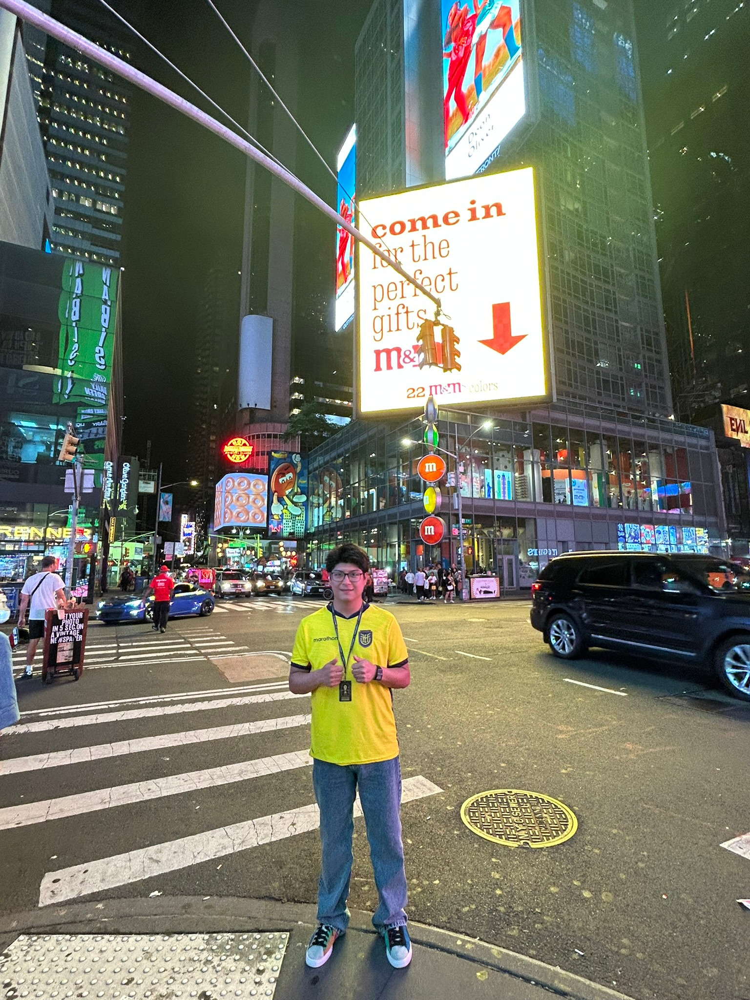

Programación
Resolver problemas a través de código y algoritmos.
Estudiante · Desarrollador en formación
Me apasiona la programación, la tecnología y convertir ideas en soluciones. Bienvenido a mi pequeño rincón de internet.

01 / PRESENTACIÓN
Soy estudiante universitario en la Escuela Politécnica Nacional, interesado en el desarrollo de software y el aprendizaje continuo. Disfruto enfrentar desafíos, explorar nuevas herramientas y fortalecer mis habilidades como programador.
02 / LO QUE ME MOTIVA
Resolver problemas a través de código y algoritmos.
Conocer herramientas que transforman nuestra manera de crear.
Mejorar cada día con nuevos proyectos y experiencias.
03 / MIS TRABAJOS
Puedes ver mis proyectos y repositorios de programación aquí.
04 / CONOCIMIENTOS
Python, Java, HTML y CSS.
Git, GitHub y Linux.
Algoritmos, lógica de programación y resolución de problemas.
03 / ENCUÉNTRAME
Estos son mis únicos enlaces externos en esta página.